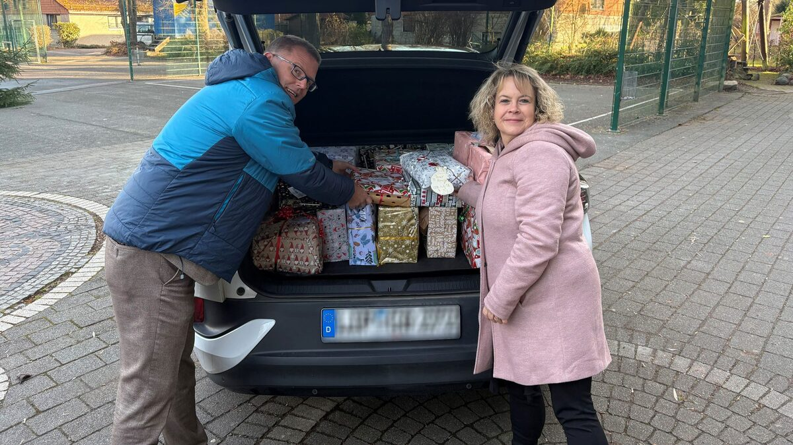
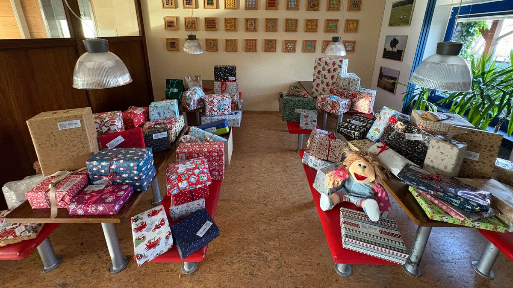

121 Weihnachtspäckchen, eine Handpuppe und 3.000 Euro Spende für das Westfälische Kinderdorf Barntrup
Veröffentlicht am 18.12.2025
Lemgo, 18.12.2025
Ein starkes Zeichen des Miteinanders: Mitarbeitende von Brasseler haben sich in der Vorweihnachtszeit in besonderer Weise für das Westfälische Kinderdorf Barntrup engagiert. Auf eigene Kosten erfüllten sie die Wunschzettel der Kinder und packten insgesamt 121 Geschenke – so viele wie noch nie zuvor bei der „Weihnachtspäckchenaktion“. Ergänzt wurden die Päckchen durch eine Handpuppe, die im Rahmen von Therapiegesprächen eingesetzt werden kann sowie von Seiten des Unternehmens um einen Betrag von 3.000 Euro für die laufenden Projekte des Westfälischen Kinderdorfs e. V. in Barntrup.
Persönliches Engagement der Mitarbeitenden
Die Päckchenaktion lebt vom persönlichen Einsatz der Belegschaft. Jedes Geschenk wurde individuell ausgewählt, verpackt und beschriftet. Die Handpuppe „Ilselotte Keksberg“, die gerade im Rahmen von Therapien als „Eisbrecher“ für Gespräche genutzt werden kann, kam noch als Gruppengeschenk mehrer Kolleginnen und Kollegen hinzu.
Björn Hartmann, Leiter des Bereichs Personal bei Brasseler:
„Die große Beteiligung zeigt, wie stark das soziale Engagement bei Brasseler verankert ist und mit welchem Engagement die Mitarbeitenden Verantwortung über das Unternehmen hinaus übernehmen.“
Spende statt Weihnachtskarten
Zusätzlich verzichten die Mitarbeitenden auf gedruckte Weihnachtsgrüße. Auf diese Weise erhält das Westfälische Kinderdorf neben den Geschenken eine finanzielle Unterstützung in Höhe von 3.000 Euro.
Übergabe vor Ort
In dieser Woche machten sich die Geschenke von Lemgo aus auf den Weg nach Barntrup. Zwei voll beladene Autos waren nötig, um alle Päckchen zu transportieren. Die Übergabe übernahmen Björn Hartmann, Leiter Personal, und Tanja Obermeier, Teamassistentin Personal und Organisatorin der Aktion.
Heike Krietenstein, Dorfleitung des Westfälischen Kinderdorfes Barntrup, freut sich: „Wir wissen die großzügige Unterstützung der Brasseler-Mitarbeitenden und des Unternehmens sehr zu schätzen. Diese Päckchen bringen nicht nur Freude in die Herzen unserer Kinder, sondern zeigen auch, wie wichtig Solidarität und Gemeinschaft gerade in der Weihnachtszeit sind. Die Spende wird uns helfen, weiterhin eine liebevolle und fördernde Umgebung für die Kinder zu schaffen. Herzlichen Dank an alle, die diese wunderbare Aktion möglich gemacht haben.“
Mit dieser guten Nachricht wünschen wir ein frohes Weihnachtsfest und alles Gute für das kommende Jahr!

Björn Hartmann, Leiter Personal bei Brasseler, und Tanja Obermeier, Teamassistentin Personal, beim Einladen der Päckchen

121 Päckchen und eine Handpuppe sind im Kinderdorf angekommen
Björn, Hartmann, Leiter Personal Brasseler, Frau Heike Krietenstein, Dorfleitung des Westfälischen Kinderdorfes Barntrup, und Tanja Obermeier, Teamassistentin, v. l. n. r.
Über Westfälisches Kinderdorf e. V.
Seit mehr als sechs Jahrzehnten gibt der Westfälisches Kinderdorf e. V. Kindern und Jugendlichen in Not ein Zuhause auf Zeit: in den Kinderdörfern in Dissen (Landkreis Osnabrück) und in Barntrup (Lippe). Neben Kindern und Jugendlichen wohnen dort heute auch junge Erwachsene und junge Mütter mit ihren Kindern. Ambulant leistet der Verein Einzelfall- und Familienhilfe. Vereinssitz, Hauptverwaltung sowie eine der beiden vereinseigenen Kindertagesstätten befinden sich in Paderborn. An den insgesamt drei Standorten werden stationär sowie in den Kindertageseinrichtungen und weiteren Angeboten der Kinder- und Jugendhilfe über 300 Kinder und Jugendliche von rund 300 Mitarbeitenden betreut. Der Verein Westfälisches Kinderdorf ist eigenständig. Als überkonfessionelles Kinderdorfwerk ist er staatlich anerkannter freier Träger der Jugendhilfe. Mitglieder, Spender und Förderer helfen dem Verein, die Zukunft der anvertrauten Kinder zukunftsfähig zu gestalten.

Pressekontakt
Melanie Köhler
Unternehmenskommunikation
Telefon +49 (0) 160 3447748
presse@brasseler.de